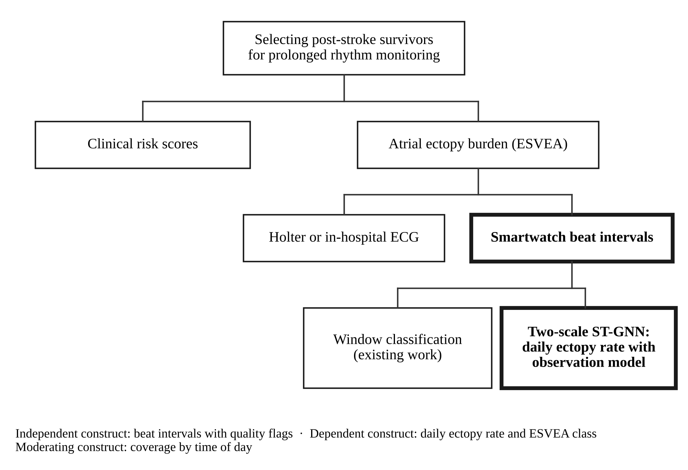
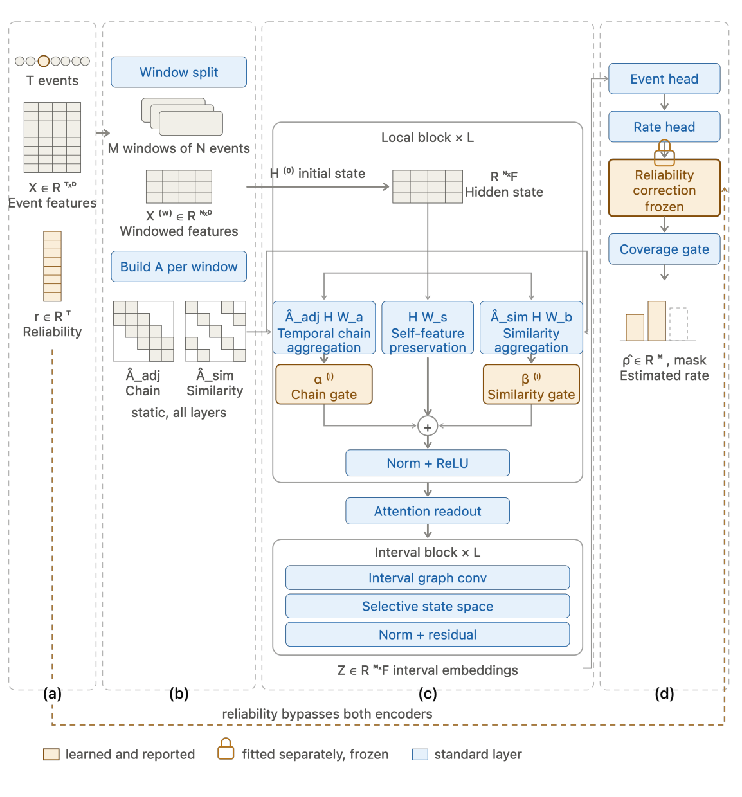

Estimating Atrial Ectopy Burden from Smartwatch Beat Intervals
A two-scale spatio-temporal graph neural network, with an explicit model of signal quality and unobserved time, and its feasibility in post-stroke survivors.
Problem, aim and questions
Problem. Excessive supraventricular ectopic activity (ESVEA) selects post-stroke survivors for prolonged rhythm monitoring, but every threshold was derived on Holter ECG, the scarce resource being allocated. Smartwatches report beat intervals with a per-beat quality flag, yet the error of a smartwatch-derived daily ectopic count is unknown. Filtering removes ectopic beats preferentially, and analysable data are night-weighted while PACs peak in the afternoon and evening.
Aim. Establish whether smartwatch beat intervals, analysed with an estimator that models signal quality and unobserved time, can yield a daily atrial ectopy estimate whose error is characterised against ECG labels under simulated smartwatch losses, and whose coverage after stroke is adequate, as a step towards comparison with ECG-derived ESVEA thresholds.
| Research question | Research objective | Hypothesis |
|---|---|---|
| RQ1 How much ectopy information is lost when a PPG waveform is reduced to a quality-filtered beat-interval series? | RO1 Investigate the loss, separating absent pulse morphology from beat rejection. | H1 In Icentia11k patients not used in the preliminary analysis, PAC retention after filtering varies with ectopy burden, so no single correction factor restores the count. |
| RQ2 Can a two-scale beat-interval ST-GNN using per-beat quality flags as input estimate atrial ectopy rate more accurately than sequence-based baselines? | RO2 Develop and evaluate the two-scale ST-GNN (beat-graph and epoch-graph). | H2 On subject-wise held-out data, the ST-GNN with the flag as input has lower daily-count MAE than the best non-graph baseline. |
| RQ3 Can a 7-day smartwatch protocol in post-stroke survivors yield enough analysable and stable data for a per-day ESVEA classification? | RO3 Evaluate deployability (yield, threshold computability, day-to-day stability) against progression criteria. | H3 At least 75% of participants yield 3 or more valid days (null 50% or below). |
| RQ4 Does substituting a smartwatch estimate for the ECG count change ESVEA classification, and how do wearable-based selections compare with clinical scores? | RO4 (a) Reclassification under simulated device losses on held-out Icentia11k; (b) agreement with score-based selections in the cohort. | Descriptive, no hypothesis. |
ESVEA definition used
- Primary: 480 or more supraventricular beats per day (Haeusler et al., 2025, MonDAFIS).
- Secondary: 30 or more per hour (Binici et al., 2010).
- Runs reported separately, because filtering breaks them.
Contribution claimed
- Method: the quality flag treated as evidence; a frozen retention model reweights retained beats; a coverage gate decides when a value can be reported.
- Empirical: loss decomposition (RO1) and the error of a daily count under simulated losses (RO2, RO4a); deployability after stroke (RO3).
- The graph architecture is a means, tested against baselines, not a claimed contribution.
Conceptual framework and research design
Survivors are selected for monitoring either by clinical risk scores or by Holter ectopy burden. The study adds a third route, smartwatch beat intervals, and estimates a daily ectopy rate with an explicit observation model.
| Independent construct | The observed beat-interval series with its per-beat quality flags |
|---|---|
| Dependent construct | Daily ectopy rate and the ESVEA class derived from it |
| Moderating construct | Coverage, defined by time of day (four 6-hour blocks) |

Design: three retrospective analyses, one prospective cohort
| Data | Role | Key facts that constrain the method |
|---|---|---|
| Icentia11k PhysioNet, CC BY-NC-SA 4.0 | ECG beat-label truth for RO1, RO2, RO4a | Up to 50 random ~70-min segments per patient with no clock time; ~24% of beats unclassifiable (excluded). Reference is a patient-level rate × 24, not a true day. |
| Pulsewatch Synapse syn23565056 | RO1 morphology loss; motion term of retention; window-level transfer test for RO2 | Samsung watch PPG 50 Hz, accelerometer magnitude only, ECG R-peaks 250 Hz without beat types; 30-s labels with PAC and PVC merged. Alignment not beat-accurate: per-session lag needed. Permitted use to be confirmed. |
| Simband, MIMIC-III | Pilot external cohorts | Small subject counts. |
| RO3 cohort (PPUM) | Feasibility; RO4b | Adults after ischaemic stroke or TIA without known AF, consecutive; recruit ~40, analyse ≥34; 7 days of Garmin wear. No concurrent ECG. |
Validation matrix (Table 3.1): where truth exists
| Objective | Data | Ground truth | Cannot claim |
|---|---|---|---|
| RO1 | Pulsewatch; Icentia11k | Expert window labels; ECG beat labels | PPG beat loss from Icentia11k (ECG RR) |
| RO2 | Icentia11k, subject-wise splits; Pulsewatch transfer and motion retention | ECG beat labels → patient-level reference rate; Pulsewatch window labels and lag-corrected R-peaks | Daily-count accuracy on PPG or Garmin intervals; retention on the Garmin |
| RO3 | Prospective cohort | None | Accuracy of any individual estimate |
| RO4a | Held-out Icentia11k, degraded | ECG beat labels → reference ESVEA status | Real-device performance |
| RO4b | Cohort plus routine records | None (agreement only) | Which selection is better |
Four phases, each feeding the next
The order is a dependency chain: RO1 measures what is lost and supplies the class part of the retention model, RO2 builds and freezes the estimator, RO3 tests delivery in patients, and RO4 asks whether the estimate changes classification.
Investigate information loss
Waveform vs interval model on identical Pulsewatch recordings; filter threshold sweep on Icentia11k; premature vs PAC-only count by burden.
→ π̂class(k) and the retention curveDevelop two-scale ST-GNN
Beat-graph per window, epoch-graph over the day; flag as input; frozen retention correction; coverage gate. Baselines and ablations.
→ frozen model (M4) used in RO4aEvaluate deployability
7-day Garmin wear after stroke or TIA; yield, computability, day-to-day stability, activity, ESVEA proportion.
→ coverage profile; RO4b selectionsSubstitute and validate
4a: held-out Icentia11k degraded to smartwatch-like intervals. 4b: wearable vs score-based selections at equal capacity.
→ reclassification; agreementFallback. If ethics or the device is not secured by S4, RO3 becomes a device-verification study with coverage modelled from Pulsewatch wear data, RO4a proceeds unchanged, and RO4b is deferred. RO1, RO2 and RO4a do not depend on the cohort.
Decomposing the information loss
Beat intervals discard the P wave that separates PACs from other premature beats. RO1 splits the resulting loss into three parts.
| Sub-question | Data | Comparison | Output |
|---|---|---|---|
| RQ1.1 Morphology loss | Pulsewatch (PPG + reference ECG; window labels) | Waveform model vs beat-interval model on identical recordings. Labels merge PAC and PVC, so this measures premature-beat loss. | Change in F1 and AUROC |
| RQ1.2 Filtering loss | Icentia11k (beat labels) | Percent-deviation filter (Karlsson et al., 2012) and adaptive threshold (Lipponen & Tarvainen, 2019), threshold sweep | Share of ectopic vs normal beats removed; retention curve |
| RQ1.3 Origin loss | Icentia11k (PAC and PVC labels) | Origin-agnostic premature-beat count vs PAC-only count, by burden | Count discrepancy by ectopy burden |
Percent-deviation filter as implemented in the preliminary script
An interval is rejected when it deviates from the median of the 5 preceding accepted intervals by more than the threshold (10% to 30%). Unclassifiable (Q) beats and intervals touching them are excluded; intervals outside 0.2–3.0 s are dropped. Each interval is tagged by the beat that ends it (coupling interval) and the beat that starts it (pause after PAC).
H1 is tested with a mixed-effects logistic regression of PAC retention on burden, in Icentia11k patients not used in the preliminary analysis. The earlier H1 was replaced because it was true by construction.
The two-scale ST-GNN
The estimator works at two scales. At the beat scale, the interval stream is cut into windows; each window carries a banded temporal-chain graph and a k-nearest-neighbour similarity graph, combined in a gated local block. At the epoch scale, an interval block of graph convolution and a selective state-space layer runs across windows to aggregate the day. A separate reliability pathway bypasses both encoders. Select any block to see what it does.
Tensor trace
| Stage | Object | Shape | Note |
|---|---|---|---|
| Input stream | X | T × D | T beats, D per-beat features (interval and derived features; flag enters as input) |
| Reliability | r | T | From the device quality flag; also routed around both encoders |
| Window split | X(w) | N × D, w = 1…M | Window length N is a reported sensitivity parameter |
| Graphs | Âadj, Âsim | N × N per window | Static, shared by all L local layers; k is a reported sensitivity parameter |
| Local block l | H(l) | N × F | H(0) is the initial state from X(w) |
| Attention readout | window embedding | F → stacked M × F | One vector per window |
| Interval block | Z | M × F | Day-level context across windows |
| Heads | p̂i; ρ̂; mask | T; M; M | Beat PAC probability, window rate, report/abstain |
Local block update
Reading Figure 3.2, the three branches are summed and passed through normalisation and ReLU:
The gates α(l) and β(l) are learned and reported, so the relative weight of temporal-chain and similarity evidence at each layer is inspectable. The self branch keeps each beat's own features so that aggregation does not wash out a single premature beat.
Why the quality flag is input, not a deletion rule
The Garmin flag is binary and marks both motion-affected beats and any interval the device judges abnormally short or long. A premature beat therefore tends to be flagged low confidence: the flag is a quality signal and a weak ectopy signal at once. The accelerometer separates the two, since low-confidence beats at low motion are candidate rhythm events. Deleting flagged beats would remove the very events being counted, which is what RO1's filter results show (60.9% of PAC coupling intervals removed at 20%).
Icentia11k has no device flag, so training flags are simulated from the Garmin specification and the RO1 results. This is a stated assumption.

Open design choices (not fixed in the proposal)
- Window length N, neighbourhood size k and depth L (N and k are reported as sensitivity analyses).
- Edges of the interval (epoch) graph across windows, and the specific selective state-space layer.
- Training losses for the event head and rate head, and how beat states and day context are combined in the event head.
- Specification of the training-flag simulator and the lag method that does not need labelled segments.
From beat probabilities to a daily count
The network outputs beat-level PAC probabilities. The observation model turns them into a rate: each retained beat is weighted by the inverse of its retention probability (as in inverse-probability weighting), each time-of-day block is normalised by its own observed hours, and blocks are combined by length.
Retention for class k ∈ {PAC, other} at motion m. Class part from RO1 on Icentia11k (PAC coupling intervals kept 39.1%, normal 91.2% at the 20% filter). Motion part from Pulsewatch with per-session lag. The product is an assumption, because Pulsewatch R-peaks carry no beat types. No time-of-day term: time acts only through motion and coverage.
- h, Lh
- Time-of-day blocks 00–06, 06–12, 12–18, 18–24 h; Lh = 6 h each, so blocks are weighted by the time they cover, with no external diurnal profile.
- A(d,h)
- Retained beats in day d, block h.
- p̂i, mi
- Predicted PAC probability of beat i; its accelerometer motion.
- τ(d,h), c(d,h)
- Observed hours and analysable coverage of the block.
- θblock
- Per-block minimum, fixed in the registered protocol after device verification (proposed about 1 h).
- V
- Valid days. Equation 3.4 needs at least 1 analysable hour per block across the week.
- 24 · R̄
- Participant count used for ESVEA status. Per-day values (3.2, 3.3) serve day-to-day stability only.
- λ
- Sensitivity analysis: block rates shrunk towards the Larsen et al. (2016) profile (0.87, 0.63, 1.11, 1.40) with strength λ = 1 h; 0.5, 2 and 4 h also reported. Named λ to avoid clashing with Cohen's κ.
Worked example of Equations 3.2 and 3.3 illustrative numbers, not study data
Default values put most observed time at night and most ectopy in the afternoon and evening, the pattern the estimator exists to correct. The class retention 0.391 is the RO1 preliminary value; no motion retention value is claimed.
Why pooling by block (Appendix C simulation)
| Coverage | Estimator | Computable | Misclassified at 480/day | Median relative error |
|---|---|---|---|---|
| Typical (blocks worn 95%) | Per-day, per-block rule (3.2, 3.3) | 98.4–98.9% | 2.1–2.5% | 9.7–10.4% |
| Shrinkage, λ = 1 h | 98.9–99.2% | 1.6–2.0% | 8.1–8.6% | |
| Pooled by block (3.4) | 98.5–98.9% | 1.8–2.1% | 8.4–8.8% | |
| Poor (blocks worn 75%) | Per-day, per-block rule | 80.5–82.0% | 4.2–4.4% | 19.4–21.2% |
| Shrinkage, λ = 1 h | 95.4–95.9% | 3.1–3.7% | 14.6–15.4% | |
| Pooled by block (3.4) | 87.1–88.3% | 2.7–3.3% | 13.9–15.1% |
Calibrated to Måneheim et al. (2024) 1-day and 7-day sensitivities (76.6%, 88.8%), ESVEA 25.3%, Ding et al. (2023) wear and Merschel & Reinhardt (2022) usable time. λ from 0.5 to 4 h changes ESVEA class in at most 3% of participants. Limits: retention and PAC identification treated as perfect; each unknown swept at two values only.
Graph structure is tested, not assumed
A multilayer perceptron slightly outperformed a GCN on visibility-graph beat features in prior work (EPMoghaddam et al., 2024), so every component of the architecture must earn its place against simpler alternatives.
| Question | Comparison | Models benchmarked | Isolates |
|---|---|---|---|
| RQ2.1 Does a graph over beat intervals beat non-graph models? | Beat-graph vs classical, rule-based, sequence | LR, SVM, RF on RR features; Poincaré rule; BiLSTM; GRU-D; transformer | Relational structure |
| RQ2.2 Does an epoch graph beat direct aggregation? | Epoch-graph vs summation and pooling | Sum over analysable hours; mean pooling; LSTM over epochs | The second scale |
| RQ2.3 Which components account for any difference? | Component ablation | Remove chain edges, similarity edges, interval block, retention correction, coverage gate | Each component |
| RQ2.4 Does treating the flag as input change accuracy? | Flag as filter vs input vs input with correction | Same encoder under three regimes | Reliability as input |
Training and evaluation protocol
- Subject-wise splits; preprocessing, quality thresholds and any resampling fitted within training folds; test folds at natural prevalence.
- Five random seeds per model, averaged; sensitivity to window length and graph neighbourhood size reported.
- Beat level: PAC sensitivity, PPV, F1, PR-AUC. Day level: daily-count MAE, calibration slope and intercept across burden.
- H2 is the single primary contrast (paired subject-level bootstrap 95% CI); other contrasts and ablations Holm-corrected.
- Pulsewatch gives a window-level external test, as it lacks beat-level truth.
Implementation
- Python, PyTorch, PyTorch Geometric; one GPU suffices because RO2 uses beat annotations rather than raw signals.
- Versioned configs, recorded split lists; code and splits released on publication.
- Reporting follows PROBAST+AI. Discarded recordings reported with reasons.
- If H2 is rejected, the retention correction and coverage gate are still evaluated on the best baseline and the negative result is reported.
Deployability after stroke
| Element | Specification |
|---|---|
| Device | Garmin Enhanced beat-to-beat intervals, binary per-beat confidence, gap markers, accelerometer. Raw PPG is not available: that is the loss RO1 quantifies. |
| Duration | 7 days continuous wear, one short daily charging window. Sensitivity for high daily PAC frequency rises from 76.6% on one day to 88.8% after seven (Måneheim et al., 2024). |
| Valid day | Minimum analysable coverage in both a daytime and a night-time block (assumed about ≥6 h day, ≥2 h night; set at device verification). |
| Daily rate | Equation 3.2 per day; ESVEA from the pooled count (3.4) ≥ 480/day; ≥ 30/h secondary; runs separate. |
| Primary outcome | Proportion of participants with ≥3 valid days. |
| Progression criteria | red ≤50% amber 51–74% green ≥75% |
| Sample | Traffic-light method: upper red boundary 50%, expected green 75%, 90% power, one-sided α 0.05 → about 34 analysable; recruit about 40. |
| Secondary | Yield (RQ3.1), computability of the daily denominator (RQ3.2), day-to-day stability, ICC(2,1) (RQ3.3), activity (RQ3.4), ESVEA proportion as plausibility check (RQ3.5). |
Device verification on non-participant wear precedes ethics submission: export, flag and gap encoding, all-day logging, 7-day battery, and the day, night and per-block coverage thresholds.
Substitution and validation
RO4a: where ECG truth exists
Icentia11k patients held out from RO1 calibration and RO2 training get a reference ESVEA status from the patient-level rate. Their records are degraded to smartwatch-like intervals and re-estimated by the frozen RO2 model. Degradations are sampled independently of the training simulation and swept in severity.
Outcomes: reclassification rate, κ, sensitivity and specificity at the cut-off, with Wilson 95% CIs. A held-out sample like the preliminary one (67 of 298 at ≥480/day) estimates sensitivity within about ±8 points.
RO4b: agreement in the cohort
Wearable selection vs CHA2DS2-VASc, HAVOC, C2HEST, AS5F and Brown ESUS-AF (ESUS subgroup only) at equal monitoring capacity: each method selects as many participants as the wearable calls ESVEA-positive.
Cohen's κ, Jaccard overlap, discordant-patient profile, and association with atrial substrate (LA volume index, P-wave duration, NT-proBNP). Descriptive, since fewer than five AF events are expected.
Degradation operators (Table 3.4)
| Operator | Simulates | Calibrated from |
|---|---|---|
| Beat rejection | Quality-based deletion of intervals by the device | RO1 filtering results |
| Coverage gaps | Non-wear, charging, unusable PPG, placed by block on pseudo-days (segments are untimed) | Night-weighted analysable time (Merschel & Reinhardt, 2022); RO3 coverage when available |
| Pulse deficit | A premature beat with no wrist pulse, merging two intervals into one long one | Pulse lost below a coupling interval of about 55% of sinus RR (Zheng et al., 2008), swept around that value |
Traceability and analysis plan
| RO | Hyp. | Primary metrics | Statistical treatment | Deliverable |
|---|---|---|---|---|
| RO1 | H1 | Change in F1 and AUROC between representations; share of ectopic and normal beats removed; count discrepancy | DeLong test; paired bootstrap for F1; mixed-effects logistic regression of PAC retention on burden; Bland–Altman | Loss decomposition, retention curves (paper 1) |
| RO2 | H2 | PAC sensitivity, PPV, F1, PR-AUC; daily-count MAE; calibration slope and intercept | Subject-wise splits; seeds averaged; paired subject-level bootstrap for H2; Holm for the rest | Estimator, code, error profile (paper 2) |
| RO3 | H3 | Proportion with ≥3 valid days; yield; computability; day-to-day agreement; ESVEA proportion | One-sided test vs 50%; Wilson 95% CI; ICC(2,1); linear mixed-effects model for activity | Feasibility report, registered protocol (paper 3) |
| RO4a | – | ESVEA reclassification; sensitivity and specificity | Wilson 95% CI across severity sweep; κ vs ECG status | Reclassification across device-loss severities |
| RO4b | – | Agreement and overlap; association with atrial substrate | Cohen κ, Jaccard; logistic regression and rank correlation | Selection agreement analysis |
Preliminary evidence
RO1: filtering removes ectopic intervals preferentially
298 of 300 randomly sampled Icentia11k patients (median 57.5 h each). Share of RR intervals removed by the percent-deviation filter, by threshold.
Loss depends on burden (20% threshold)
| PAC coupling removed | % | |
|---|---|---|
| ESVEA-negative | 78.5 | |
| ESVEA-positive | 60.0 |
Frequent PACs enter the running reference and are then accepted, so no single correction factor restores the count. This motivates H1 and context-dependent retention.
Prevalence in the sample
| Median PACs per hour (IQR) | 1.35 (0.23–13.38) |
| ≥ 480 PACs/day (extrapolated) | 67 (22.5%) |
| ≥ 30 PACs/h | 54 (18.1%) |
| Any run ≥ 20 PACs | 25 (8.4%) |
| ESVEA, Binici rate or run | 66 (22.1%) |
Cross-device beat-graph pilot
A beat-graph classifier on the same interval representation, rhythm labels per window. Shows feasibility of the representation, not of counting.
| Held-out cohort | Subjects (AF); windows | AF vs rest AUROC | AF vs PAC/PVC AUROC | AF recall, 0.393 / 0.505 | PAC/PVC false alarms, 0.393 / 0.505 |
|---|---|---|---|---|---|
| Pulsewatch clinical | 16 (1); 48,396 | 1.000 (1.000–1.000) | 0.998 (0.997–1.000) | 100% / 95% | 18.3% / 9.8% |
| Pulsewatch AF-only holdouts 3 AF trial, 5 in-clinic | 8 (8); 5,483 | not computed | not computed | 97% / 88% | no PAC/PVC windows |
| Simband | 6 (1); 46 | 0.995 (0.989–1.000) | 0.968 (CI not estimable) | 100% / 92% | 15.4% / 0.0% |
| MIMIC-III | 3 (1); 1,215 | 0.995 (0.993–0.997) | 1.000 (CI not estimable) | 45% / 15% | 0.0% / 0.0% |
Rerun of 3 November 2026: re-curated external labels, all v2 training and validation subjects excluded, same checkpoint in evaluation mode. AUROCs use the untuned score weight 0.5 (95% CIs from 2,000 subject resamples). Recall and false alarms use the gfeat-head score at thresholds set on validation subjects (0.393, 0.505), not re-tuned. The earlier Simband and MIMIC-III values (legacy labels) are withdrawn.
What this shows. Ranking transferred across devices (AUROC 0.995 or higher wherever non-AF windows existed), but the operating point did not: AF recall at 0.393 fell to 45% on MIMIC-III fingertip PPG. PAC/PVC windows caused more false AF alarms than sinus rhythm on Pulsewatch (18.3% vs 8.9%). Test set 33 subjects; each cohort except the AF-only holdouts has one AF subject, so intervals reflect variation between windows, not AF patients. In the AF-only holdouts, three subjects supply 99% of windows, so their recall reflects three people, and with no non-AF windows there is no false-alarm estimate. The model design was iterated while these holdouts were inspected, so they are not untouched.
Pulsewatch beat-retention pre-check not passed
8 subjects, rule locked before the run. Beat matching against lag-shifted ECG R-peaks, by motion bin (sessions passing the quality gate).
| Motion (m/s²) | Beats | Match | Control | Excess | Intervals kept |
|---|---|---|---|---|---|
| < 0.05 | 55,684 | 0.849 | 0.207 | +0.642 | 0.766 |
| 0.05–0.2 | 15,812 | 0.725 | 0.224 | +0.501 | 0.600 |
| 0.2–0.5 | 5,342 | 0.516 | 0.202 | +0.315 | 0.335 |
| 0.5–1 | 6,074 | 0.477 | 0.204 | +0.273 | 0.292 |
| ≥ 1 | 4,468 | 0.407 | 0.210 | +0.197 | 0.220 |
| 1. Above chance at high motion | +0.273 (95% CI +0.180 to +0.336) at 0.5–1; +0.197 (+0.122 to +0.254) at ≥1 | met |
| 2. Falls with motion within subjects | 8 of 8 subjects (one near chance) | met |
| 3. Detector comparable | Project 0.850 vs authors' peaks 0.752; pooled gap 0.097 (limit 0.05); largest subject gap 0.146 (limit 0.10) | not met |
Decision (made after results): the motion term stays, estimated on Pulsewatch in RO2 with a detector sensitivity analysis. Primary detector: an Elgendi et al. (2013) systolic-peak implementation on all segments; the authors' peaks are the alternative on labelled segments. The current lag method reached only 2.5% of excluded and 0.8% of no-label segments, so a label-free lag method is an RO2 task.
Icentia11k has no clock time
All headers read (9 of 9, plus 59 of 60 random) carry no date, time or comments; segments are 69.9 min. Hence: no time-of-day analysis on Icentia11k, a patient-level reference rate, and pseudo-days in RO4a.
Limits and claim discipline
Known limits and agreed answers
- No real-device error measurement. Error is characterised on ECG-labelled data under simulated losses; Pulsewatch (Samsung) to Garmin transfer is assumed. Direct Garmin validation is future work.
- Simulation optimism. Icentia11k intervals are ECG RR, not PPG; Garmin PPG agrees only moderately with ECG for short-term variability after stroke (Theurl et al., 2023).
- Retention product is an assumption. Pulsewatch R-peaks carry no beat types.
- Thin pilot evidence. One AF subject each in Pulsewatch clinical, Simband and MIMIC-III; a validation threshold gave 45% AF recall on MIMIC-III, so operating points do not transfer across devices.
- Icentia11k reference is extrapolated from random, untimed segments.
- Device not yet received; export, flags and battery unconfirmed.
- "First" claims are qualified "to our knowledge" and "in these databases".
Never claim
- A π̂ motion-retention value, or that the pre-check passed.
- That either PPG peak detector is more accurate.
- That missed beat matches are the PPG's fault.
- Anything AF-specific from the retention check.
- Pulsewatch data-use permission (not yet confirmed).
- "Zero-shot" for the pilot: training included AF from other cohorts.
Superseded, do not follow
- Any mention of an RO3 ECG-patch substudy (ruled out).
- Checks that predate pooled Eq. 3.4, λ instead of κ, ESVEA at 480/day, and Eq. 3.1 as a product. The proposal text is authoritative.
Schedule and milestones
| Task | RO | S1 | S2 | S3 | S4 | S5 | S6 | S7 |
|---|
S1 = Semester 2, 2025/2026. S7 = Semester 2, 2028/2029. Milestones: M1 device verified (S3) · M2 ethics and protocol registered (S3) · M3 RO1 paper (S3) · M4 RO2 model frozen (S4) · M5 candidature defence (S4) · M6 recruitment complete (S5) · M7 thesis submitted 8 May 2029 (S7).
Immediate post-defence research tasks
- Download the full Pulsewatch release (about 338 GB).
- Design the lag method that does not need labelled segments.
- Select held-out Icentia11k patients for H1 and RO4a; fix the split lists.
- Specify the training-flag simulator.
- Confirm Garmin Health SDK access.